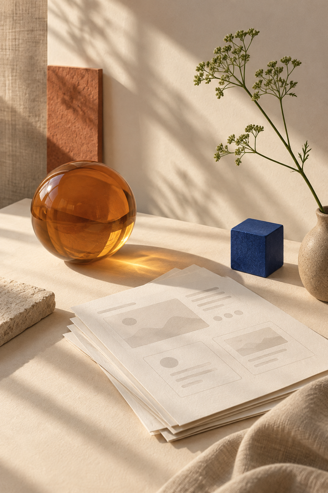

01 / AI 知识产品
智能知识助手
为团队构建基于知识库的问答与检索体验，帮助用户从大量分散内容中更快理解问题、找到可靠依据并完成下一步行动。
你好，我是 W.H.W.。我关注 AI 应用、用户体验与从 0 到 1 的产品过程，擅长从真实问题出发，把模糊的能力转化为清晰、可信的使用体验。

模型能力只是起点。真正困难的部分，是理解用户在什么情境下需要帮助、如何建立信任，以及怎样让输出自然地进入工作流。我的目标是让技术减少阻力，而不是制造新的学习成本。
每个项目都围绕真实使用场景展开，从理解用户、定义方向，到构建最小可行方案并持续验证。
为团队构建基于知识库的问答与检索体验，帮助用户从大量分散内容中更快理解问题、找到可靠依据并完成下一步行动。
从创作者的真实工作流出发，拆解灵感、生产与发布三个阶段，设计能带来实际增益的 AI 辅助触点，并以 MVP 验证核心假设。
通过访谈、观察和资料梳理，找到用户真正想完成的任务。
明确目标用户、价值假设、产品边界与可衡量的结果。
借助原型与 MVP，把抽象方案变成可体验、可讨论的内容。
观察真实反馈，校正判断，让产品在使用中逐步变好。
我喜欢把复杂的问题拆开，也重视把过程讲清楚。对我来说，产品不是功能清单，而是一系列谨慎的取舍：用户真正需要什么、技术应当出现在哪里、以及如何用最少的阻力把价值交付出去。
我正在寻找 AI 产品经理相关机会，期待与重视用户价值、愿意长期打磨产品的团队一起工作。